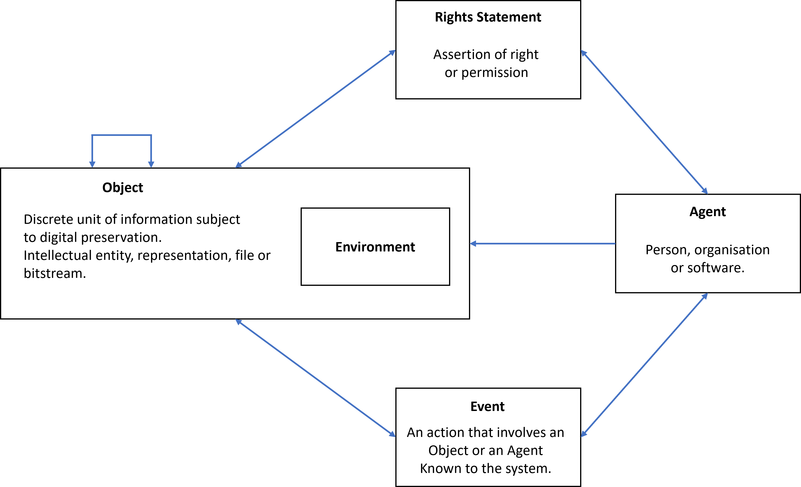
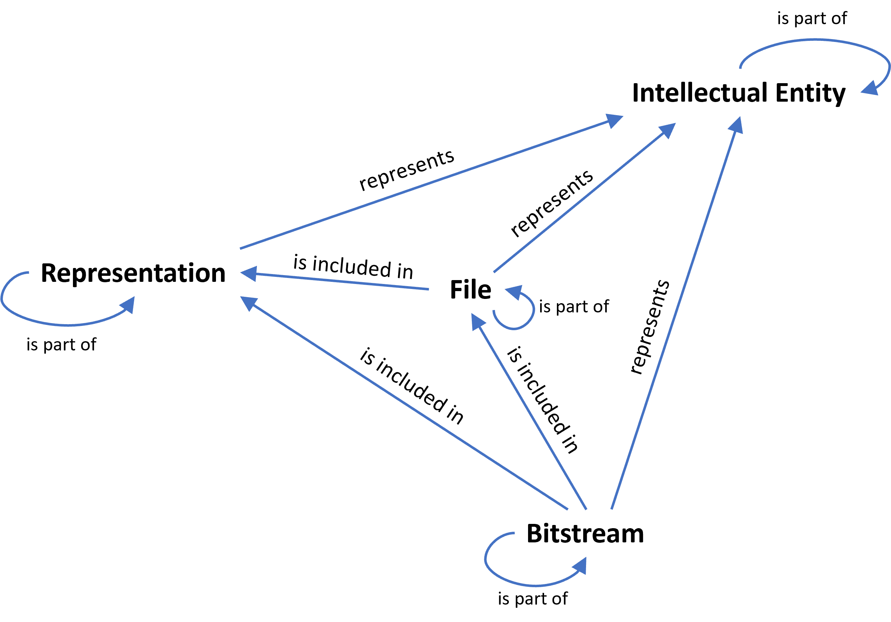
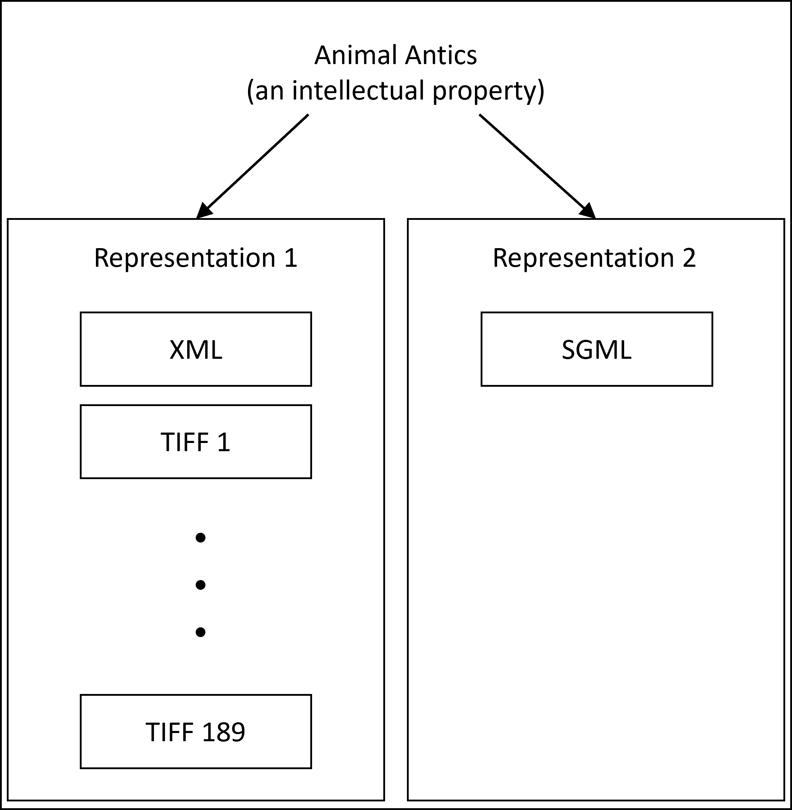
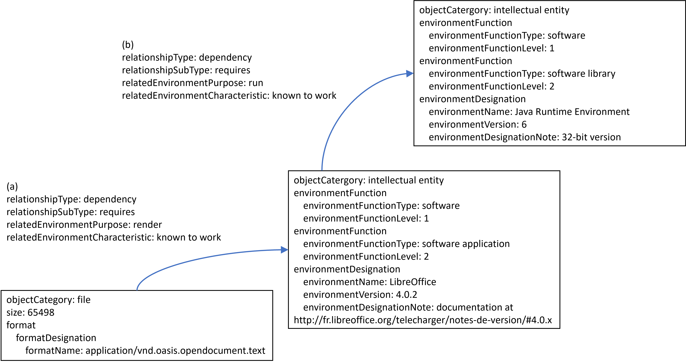

PREMIS Editorial Commttee Members
Rebecca Guenther, Library of Congress, Chair
Karin Bredenberg, Riksarkivet, Swedish National Archives
Angela Dappert, University of Portsmouth
Angela Di Iorio, Sapienza Università di Roma
Leslie Johnston, U.S. National Archives and Records Administration
Devon Landes, HBO
Peter McKinney, National Library of New Zealand
Evelyn McLellan, Artefactual Systems
Tracy Meehleib, Library of Congress
Sébastien Peyrard, Bibliothèque nationale de France
Pauline Sinclair, Preservica
Eld Zierau, Royal Library of Denmark
The following contributed their expertise to previous versions as former
members of the PREMIS Editorial Committee:
Steve Bordwell, General Register Office for Scotland
Yair Brama, ExLibris
Olaf Brandt, Koninklijke Bibliotheek, Netherlands
Priscilla Caplan, Florida Center for Library Automation (co-chair of
original PREMIS Working Group)
Gerard Clifton, National Library of Australia
Markus Enders, British Library
Noreen Hill, Library and Archives Canada
Karsten Huth, Sächsisches Staatsarchiv, Saxon State Archives
David Lake, U.S. National Archives and Records Administration
Brian Lavoie, OCLC
Yaniv Levi, ExLibris
Bill Leonard, Library and Archives Canada
Rory McLeod, British Library
Robert Sharpe, Preservica
Robert Wolfe, HBO
Zhiwu Xie, Los Alamos National Laboratory
Sally Vermaaten, Statistics New Zealand
Kate Zwaard, U.S. Government Printing Office, Library of
Congress
In addition to Editorial Committee members, the following contributed their
expertise to the work on the Environment Working Group for PREMIS 3:
Conçalo Antunes, Instituto de Engenharia de Sistemas e
Computadores
Artur Caetano, Instituto de Engenharia de Sistemas e
Computadores
Carol Chou, Florida Virtual Campus
Janet Delve, University of Portsmouth
Martin Neumann, University of Karlsruhe
Michael Nolan, Intel
In addition to Editorial Committee members, the following contributed their
expertise to the work on the Conformance Statement for PREMIS 3:
Jay Gattuso, National Library of New Zealand
Jan Hutař, Archives New Zealand
Amy Kirchhoff, ITHAKA
Joseph Pawletko, New York University
The following people were the original Preservation
Metadata: Implementation
Strategies (PREMIS) Working Group that developed
version 1 of the Data Dictionary:
Priscilla Caplan, Florida Center for Library Automation,
co-chair
Rebecca Guenther, Library of Congress, co-chair
Robin Dale, RLG liaison
Brian Lavoie, OCLC liaison
George Barnum, U.S. Government Printing Office
Charles Blair, University of Chicago
Olaf Brandt, Göttingen State and University Library
Mikki Carpenter, Museum of Modern Art
Adam Farquhar, British Library
David Gewirtz, Yale University
Keith Glavash, MIT/DSpace
Andrea Goethals, Florida Center for Library Automation
Cathy Hartman, University of North Texas
Helen Hodgart, British Library
Nancy Hoebelheinrich, Stanford University
Roger Howard, J. Paul Getty Museum
Sally Hubbard, Getty Research Institute
Mela Kircher, OCLC
John Kunze, California Digital Library
Vicky McCargar, Los Angeles Times
Jerome McDonough, New York University/METS
Evan Owens, Ithaka-Electronic Archiving Initiative
Erin Rhodes, U.S. National Archives and Records Administration
Madi Solomon, Walt Disney Corporation
Angela Spinazze, ATSPIN Consulting
Stefan Strathmann, Göttingen State and University Library
Günter Waibel, RLG
Lisa Weber, U.S. National Archives and Records Administration
Robin Wendler, Harvard University
Hilde van Wijngaarden, National Library of the Netherlands
Andrew Wilson, National Archives of Australia and British
Library
Deborah Woodyard-Robinson, British Library and Woodyard-Robinson
Holdings Ltd.
PREMIS WEBSITES & EMAILS
[toc]PREMIS Implementers' Group discussion list: pig@loc.gov. To subscribe, send
an e-mail to listserv@loc.gov with the message, "subscribe pig [your
name]".
Please send comments and questions to premis@loc.gov.
The PREMIS Data Dictionary is a comprehensive, practical resource for
implementing preservation metadata in digital preservation systems. The Data
Dictionary defines preservation metadata that:
•
Supports the viability, renderability, understandability,
authenticity, and identity of digital objects in a preservation
context;
•
Represents the information most preservation repositories need to know
to preserve digital materials over the long term;
•
Emphasizes “implementable metadata”: rigorously defined, supported by
guidelines for creation, management, and use, and oriented toward
automated workflows; and,
•
Embodies technical neutrality: no assumptions made about preservation
technologies, strategies, metadata storage and management, etc.
Development of the original PREMIS Data Dictionary
[toc]In June 2003, OCLC and RLG jointly sponsored the formation of the PREMIS
( Preservation Metadata:
Implementation Strategies)
working group, comprised of international experts in the use of metadata to
support digital preservation activities. The working group’s membership
included more than 30 participants, representing five different countries
and a variety of domains, including libraries, museums, archives, government
agencies, and the private sector. Part of the working group’s charge was to
develop a core set of implementable preservation metadata, broadly
applicable across a wide range of digital preservation contexts and
supported by guidelines and recommendations for creation, management, and
use. This portion of the working group’s charge was fulfilled in May 2005
with the release of Data Dictionary for Preservation Metadata: Final
Report of the PREMIS Working Group. In addition to the Data
Dictionary, the working group also published a set of XML schemas to support
implementation of the Data Dictionary in digital preservation systems.
The PREMIS working group was established to build on the earlier work of
another initiative sponsored by OCLC and RLG: the Preservation Metadata
Framework (PMF) working group. In 2001–2002 the PMF working group outlined
the types of information that should be associated with an archived digital
object. Their report,
A Metadata Framework to Support the
Preservation of Digital Objects (the
Framework), proposed a list of prototype metadata
elements. (
1 A Metadata Framework to Support the Preservation of
Digital Objects (Dublin, Ohio: OCLC Online Computer Library Center,
2002),
http://www.oclc.org/research/projects/pmwg/pm_framework.pdf.) However,
additional work was needed to make these prototype elements implementable.
The PREMIS working group was asked to take the PMF group’s work a step
further and develop a data dictionary of core metadata for archived digital
objects, as well as give guidance and suggest best practice for creating,
managing, and using the metadata in preservation systems.
Since the PREMIS working group had a practical rather than theoretical focus,
members were sought from institutions known to be operating or developing
preservation repository systems within the cultural heritage and information
industry sectors. Diverse perspectives were also sought. The working group
consisted of representatives from academic and national libraries, museums,
archives, government, and commercial enterprises in five different
countries. In addition, PREMIS called upon an international advisory
committee of experts to review progress.
To understand how preservation repositories were actually implementing
preservation metadata, in November 2003 the working group undertook a survey
of about 70 organizations thought to be active in or interested in digital
preservation, resulting in the report
Implementing Preservation
Repositories for Digital Materials: Current Practice and Emerging Trends
in the Cultural Heritage Community (the
Implementation
Survey Report). (
2 Implementing Preservation
Repositories for Digital Materials: Current Practice and Emerging
Trends in the Cultural Heritage Community (Dublin, Ohio:
OCLC Online Computer Library Center, 2004),
http://www.oclc.org/research/projects/pmwg/surveyreport.pdf)
The findings of this survey were extremely helpful in informing the working
group’s discussions as it developed the Data Dictionary.
Implementable, core preservation metadata
[toc]Both the earlier
Framework and the PREMIS Data Dictionary
build on the Open Archival Information System (OAIS) reference model (ISO
14721). (
3 ISO 14721:2012: Space Data and information transfer
system—Open archival information system (OAIS)—Reference model (OAIS)
(Geneva, Switzerland: International Organization for Standardization,
Aug. 2012).) The OAIS information model provides a conceptual
foundation in the form of a taxonomy of information objects and packages for
archived objects, and the structure of their associated metadata. The
Framework can be viewed as an elaboration of the OAIS
information model, explicated through the mapping of preservation metadata
to that conceptual structure. The PREMIS Data Dictionary can be viewed as a
translation of the
Framework into a set of implementable
semantic units. However, it should be noted that the Data Dictionary and
OAIS occasionally differ in terminology usage; these differences are noted
in the
Glossary that accompanies this
report. Differences usually reflect the fact that PREMIS semantic units
require more specificity than the OAIS definitions provide, which is to be
expected when moving from a conceptual framework to an implementation.
The Data Dictionary defines “preservation metadata” as the
information a repository uses to support the digital preservation
process. Specifically, the group looked at metadata supporting
the functions of maintaining viability, renderability, understandability,
authenticity, and identity in a preservation context. Preservation metadata
thus spans a number of the categories typically used to differentiate types
of metadata: administrative (including Rights and permissions), technical,
and structural. Particular attention was paid to the documentation of
digital provenance (the history of an object) and to the documentation of
relationships, especially relationships among different objects within the
preservation repository. Version 3.0 of the Data Dictionary explicitly
expands the scope beyond repository boundaries in order to accommodate
seamless metadata representation across the digital object life-cycle.
The group considered a number of definitions of “core.” In one view, core
describes any metadata absolutely required under any circumstances. In
another, core means that metadata is applicable to any type of repository
implementing any type of preservation strategy. PREMIS uses this practical
definition: things that most working preservation repositories are
likely to need to know in order to support digital
preservation. The words “most” and “likely” were chosen
deliberately. Core does not necessarily mean mandatory, and some semantic
units were designated as optional when exceptional cases were apparent.
The concept of “implementability” also required definition. Most preservation
repositories deal with large quantities of data. Therefore, a key factor in
the implementability of preservation metadata is whether the values can be
automatically supplied and automatically processed by the repository.
Whenever possible the group defined semantic units that do not require human
intervention to supply or analyze. For example, controlled values from an
authority list are preferred over textual descriptions.
The working group decided that the Data Dictionary should be wholly
implementation independent. That is, the core metadata define information
that a repository needs to know, regardless of how, or even whether, that
information is stored. For instance, for a given identifier to be usable, it
is necessary to know the identifier scheme and the namespace in which it is
unique. If a particular repository uses only one type of identifier, the
repository would not need to record the scheme in association with each
object. The repository would, however, need to know this information and to
be able to supply it when exchanging metadata with other repositories.
Because of the emphasis on the need to know rather than the need to record
or represent in any particular way, the group preferred to use the term
“semantic unit” rather than “metadata element.” The Data Dictionary names
and describes semantic units.
PREMIS Maintenance Activity
[toc]Following the release of the Data Dictionary in 2005, the PREMIS working
group retired and the PREMIS Maintenance Activity, sponsored by the Library
of Congress, was initiated to maintain the Data Dictionary and coordinate
other work to advance understanding of preservation metadata and related
topics. In addition to providing a permanent Web home for the Data
Dictionary, XML schema, and related materials, the Maintenance Activity also
operates the PREMIS Implementers Group (PIG) discussion list and wiki,
conducts tutorials on the Data Dictionary and its use, and commissions
focused studies on preservation metadata topics. The Maintenance Activity
also established an Editorial Committee responsible for further development
of the Data Dictionary and the XML schema and promoting their use.
Themembership of the Editorial Committee reflects a variety of countries and
institutional backgrounds.
Users identify errors, and provide feedback on ways that the Data Dictionary
could be improved to increase its value and ease of application through a
variety of mechanisms: Discussion of issues takes place on the PREMIS
Implementers Group (PIG) discussion list and wiki, user group meetings take
place at PREMIS Implementation Fairs that are organized in conjunction with
major conferences and are advertised on the PREMIS website and through
mailing lists, and requests for changes can be submitted through the
PREMIS Data Dictionary and Schema Revision Process
specified at
http://www.loc.gov/standards/premis/revision-process.html.
The members of the Editorial Committee revise the Data Dictionary when a
sufficient level of commentary has accumulated to warrant doing so, making
every effort to engage stakeholders in the process of revision. The
Committee keeps the preservation community informed of issues being
discussed, solicits comment on proposed revisions, and consults outside
experts where appropriate.
|
|
| Version |
Release Date |
| Version 1.0 |
May 2005 |
| Schema Version 1.0 |
17 May 2005 |
| Schema Version 1.1 |
27 September 2005 |
| Version 2.0 |
March 2008 |
| Schema Version 2.0 |
17 July 2008 |
| Version 2.1 |
January 2011 |
| Schema Version 2.1 |
6 January 2011 |
| Version 2.2 |
July 2012 |
| Schema Version 2.2 |
15 May 2012 |
| Schema Version 2.3 |
4 August 2014 |
| Version 3 |
June 2015 |
Subsequent
versions of the Dictionary have taken advantage of the increase in use of
PREMIS and experience of implementing preservation solutions. They have
included corrections of errors, clarifications of some semantic units,
changes for consistency, and the addition of a few semantic units that
resulted from requests to the PREMIS Editorial Committee. Version 2.0 was a
major revision and version 2.1 added additional functionality, particularly
in the Rights entity. Version 2.2 was considered non-substantial as there
were no major changes affecting existing PREMIS descriptions. Version 2.3
contained only changes that affected the XML schema (by adding the ability
to designate use of specific controlled vocabularies); these were not
reflected in the Data Dictionary. Further information about this mechanism
is given under the section “Supplying Metadata Values”. Starting from version 2.2, a PREMIS OWL
ontology is available alongside the XML Schema. It allows one to provide a
PREMIS-endorsed flavor of the Data Dictionary so that one can express
preservation metadata in RDF. This ontology does not replace but complements
XML in areas where RDF may be better suited, such as querying or publishing
preservation metadata, or connecting repository-specific data to externally
maintained registries.
This version of the Data Dictionary, version 3, includes some major changes
and additions to the Dictionary. These can be highlighted as:
•
Repositioning of Intellectual Entity as a category of Object to enable
additional description within PREMIS and linking to related PREMIS
entities.
•
Repositioning of Environments (i.e. hardware and software needed to
use digital objects) so that they can be described and preserved reusing
the Object entity. That is to say, they can be described as Intellectual
Entities and preserved as Representation, File or Bitstream Objects.
•
Addition of physical Objects to the scope of PREMIS so that they can
be described and related to digital objects.
•
Addition of a new semantic unit to the Object entity:
preservationLevelType (O, NR) to indicate the type of preservation
functions expected to be applied to the object for the given
preservation level.
•
Addition of a new semantic unit to the Agent entity to express the
version of software Agents: agentVersion (O, NR).
•
Addition of a new semantic unit to the Event entity:
eventDetailInformation (O, R).
Major additions
are discussed in detail below (see the “PREMIS Data Model” and “Environment” sections).
Other additions are explained within the relevant section of the
Dictionary.
PREMIS Awards and Recognition
[toc]The PREMIS Data Dictionary was awarded the 2005 Digital Preservation Award
(given under the auspices of the British Conservation Awards), the 2006
Society of American Archivists Preservation Publication Award, and was a
finalist for the 2012 Digital Preservation Award for the most outstanding
contribution to digital preservation in the last decade.
The PREMIS Data Model
[toc]The PREMIS Data Dictionary defines
semantic units. Each semantic
unit defined in the Data Dictionary is mapped to an entity that is organized
within a simple data model. A semantic unit can therefore be understood as a
property of an entity. The model defines four entities important in regard
to digital preservation activities: Objects, Events, Agents and Rights. (
4 Other preservation metadata initiatives have developed other
models. The National Library of New Zealand defines four types of
entity: objects, files, processes, and metadata modification. Metadata
Standards Framework—Preservation Metadata (Revised) (Wellington:
National Library of New Zealand, June 2003),
http://digitalpreservation.natlib.govt.nz/assets/Uploads/nlnz-data-model-final.pdf.)
Figure 1 provides a graphical illustration of the PREMIS Data Model.

Figure 1. The PREMIS Data Model
In Figure 1, entities are represented by boxes; relationships between
entities are represented by arrows. When arrows are bi-directional, then
each entity type contains a semantic unit allowing it to link to the other.
So, for example, the Rights entity includes a semantic unit recording
information about the relationship with an Agent, and the Agent entity
includes a semantic unit recording information about associated Rights.
The arrow pointing from the Objects entity back to itself indicates that the
semantic units defined in the Data Dictionary support the recording of
relationships between Objects. No other entity in the data model supports
relationships of this type; in other words, while Objects can be related to
other Objects, Events cannot be related to other Events, Agents cannot be
related to other Agents, and so on.
The entities in the PREMIS data model are defined as follows:
Object (or Digital Object): a discrete unit of information
subject to digital preservation. (5 Note that the PREMIS definition
of an Object entity differs from the definition of digital object
commonly used in the digital library community, which holds a digital
object to be a combination of identifier, metadata, and data. This is
not intended to be a conflict. The Object entity in our model is an
abstraction defined only to cluster attributes (semantic units) and
clarify relationships.) Version 3 introduces the notion that this
can be an environment used as part of the preservation process.
Environment: Technology (software or hardware) supporting a
Digital Object in some way (e.g. rendering or execution). Environments can
be described as Intellectual Entities and captured and preserved in the
preservation repository as Representations, Files and/or Bitstreams.
Event: an action that involves or affects at least one Object or
Agent associated with or known by the preservation repository.
Agent: person, organization, or software program/system
associated with Events in the life of an Object, or with Rights attached to
an Object. It can also be related to an environment Object that acts as an
Agent.
Rights Statement: assertion of one or more Rights or permissions
pertaining to an Object and/or Agent.
Each semantic unit defined in the Data Dictionary is mapped to one of the
entities in the data model. In this sense, a semantic unit may be viewed as
a property of an entity. For example, the semantic unit
size is a property of an Object entity. Semantic units
have values: for a particular object the value of size
might be “843200004.”
In most cases, a particular semantic unit is unambiguously a property of only
one type of entity. The size of an object is clearly a property of the
Object entity. In some cases, however, a semantic unit applies equally to
two or more types of entity. For example, Events have outcomes, which could
be a property of the Event or the Object or Agent affected. If a migration
eventcreates a file that has lost some important feature, the loss of that
feature might be considered an outcome of the event, and therefore a
property of the Event entity. Alternatively, it might be considered an
attribute of the new file, and therefore a property of the Object entity.
When a semantic unit applies equally to multiple entity types, the decision
has been taken that the semantic unit should be associated with only one
type of entity in the Data Dictionary. The data model relies upon links
between the different entities to make these relationships clear. In the
example above, the loss of the feature is treated as a detailed outcome of
the Event, where the Event contains the identifier of the Object involved.
What is important is that this association is arbitrary and is not meant to
imply that a particular implementation is required. The choice of semantic
unit is down to individual implementations.
In some cases a semantic unit takes the form of a container that
groups a set of related semantic units. For example, the semantic unit
identifier groups the two semantic units
identifierType and identifierValue.
The grouped subunits are called semantic components of the
container. Some containers are defined as extension containers,
to allow the use of metadata encoded according to an external schema. This
enables PREMIS to be extended with metadata elements that are more granular,
non-core, or otherwise out of scope for the Data Dictionary.
A relationship is a statement of association between instances
of entities. “Relationship” can be interpreted broadly or narrowly, and
expressed in many different ways. For example, the statement “Object A is of
format B” could be considered a relationship between A and B. The PREMIS
model, however, treats format B as a property of Object A. PREMIS reserves
“relationship” for associations between two or more Object entities or
between entities of different types, such as an Object and an Agent.
The Object entity has four subcategories: Intellectual Entity,
Representation, File, and Bitstream.
An Intellectual Entity is a distinct intellectual or artistic
creation that is considered relevant to a designated community in the
context of digital preservation: for example, a particular book, map,
photograph, database, or hardware or software. An Intellectual Entity can
include other Intellectual Entities; for example, a web site can include a
web page and a web page can include an image. An Intellectual Entity may
have one or more digital or non-digital Representations.
A Representation is the set of files, including structural
metadata, needed for a complete rendition of an Intellectual Entity. For
example, a journal article may be complete in one PDF file; this single file
constitutes the Representation. Another journal article may consist of one
SGML file and two image files; these three files constitute the
Representation. A third article may be represented by one TIFF image for
each of 12 pages plus an XML file of structural metadata showing the order
of the pages; these 13 files constitute the Representation. Starting with
PREMIS version 3.0 physical items, such as manuscripts or printed documents,
may also be Representations so that digital and non-digital Representations
can be captured uniformly.
A File is a named and ordered sequence of bytes that is known to
an operating system. A File can be zero or more bytes and has a File format,
access permissions, and File system characteristics such as size and last
modification date.
A Bitstream is contiguous or non-contiguous data within a file
that has meaningful common properties for preservation purposes. A Bitstream
cannot be transformed into a standalone file without the addition of file
structure (headers, etc.) and/or reformatting the Bitstream to comply with
some particular file format.
The relationship between the subcategories is illustrated in Figure 2. The
subcategories are discussed in more detail below.

Figure 2. Conceptual view between object categories
Intellectual Entities
[toc]An Intellectual Entity is a distinct intellectual or artistic
creation that is considered relevant to a designated community in the
context of digital preservation. An Intellectual Entity can include other
Intellectual Entities and it may have one or more Representations.
Before versions 3.0 of the Data Dictionary Intellectual Entities were
considered out of scope for PREMIS, since many types of Intellectual
Entities--such as books, articles, images, archival collections, or
statistical studies – do not necessarily need to be described as part of the
preservation metadata and are well-served by descriptive metadata that
supports their discovery and retrieval from outside the preservation
metadata.
In version 3.0, one now has the choice of modeling Intellectual Entities
outside PREMIS or within it.
Consider an example where the Intellectual Entity is specified outside PREMIS
(as has been the case in previous versions). A TIFF Representation for an
image has the identifier “galapagos.6754.1”. Note that instead of using the
linkingIntellectualEntityIdentifier from version 2, the
Representation now links to the externally specified Intellectual Entity
using a structural “represents” relationship with a
relatedObjectIdentifier whose value is an external
actionable HTTP URI identifier. There may be additional Representations,
such as a jpg image or a thumbnail, relating to the same Intellectual
Entity. In this case no explicit PREMIS Object is created for the
Intellectual Entity.
|
| premis:objectIdentifier |
| premis:objectIdentifierType="hdl" |
| premis:objectIdentifierValue="galapagos.6754.1" |
| premis:objectCategory=representation |
| premis:relationship |
| premis:relationshipType="structural" |
| premis:relationshipSubType="represents" |
| premis:relatedObjectIdentifier |
| premis:relatedObjectIdentifierType="URI" |
| premis:relatedObjectIdentifierValue="http://natureweb/col1.galapagos6754/default.html" |
|
Alternatively, the Intellectual Entity can be modeled as an autonomous Object
within PREMIS with objectCategory "Intellectual Entity". PREMIS
implementation experience and the modeling work of the Planets Project (
6 Report on policy and strategy models for libraries, archives and
data centres, July 2009,
http://www.planets-project.eu/docs/reports/Planets_PP2_D3_ReportOnPolicyAndStrategyModelsM36_Ext.pdf.)
have shown that repositories may have a need to record descriptive metadata
as well as preservation information, such as significant properties,
relationships, rights, and related events information, at the Intellectual
Entity level.
In this second example, the Intellectual Entity is instead specified within
PREMIS. Once again, aTIFF Representation for an image has the identifier
“galapagos.6754.1”. However, this time its descriptive metadata is captured
in an Intellectual Entity instance. The Intellectual Entity’s identifier
within PREMIS is “col1.galapagos6754”, a stable handle identifier, which is
persistent and suited for linking within the repository. Additionally, the
Intellectual Entity has an actionable identifier (HTTP URI), which links to
its catalog record. Furthermore it records the Event (E004) when the
Intellectual Entity was added to the digital collection. The repository
creates separate records for the Representation, the Intellectual Entity,
and the related Event:
For the image Representation linking to its Intellectual Entity in
PREMIS:
|
| premis:objectIdentifier |
| premis:objectIdentifierType="hdl" |
| premis:objectIdentifierValue="galapagos.6754.1" |
| premis:objectCategory=representation |
| premis:relationship |
| premis:relationshipType="structural" |
| premis:relationshipSubType="represents" |
| premis:relatedObjectIdentifier |
| premis:relatedObjectIdentifierType="hdl" |
| premis:relatedObjectIdentifierValue="col1.galapagos6754" |
|
For its Intellectual Entity in PREMIS recording both identifiers and the
Event:
|
| premis:objectIdentifier |
| premis:objectIdentifierType="hdl" |
| premis:objectIdentifierValue="col1.galapagos6754" |
| premis:objectCategory=intellectual entity |
| premis:objectIdentifier |
| premis:objectIdentifierType="URI" |
| premis:objectIdentifierValue="http://natureweb/col1.galapagos6754/default.html" |
| premis:objectCategory=intellectual entity |
| premis:linkingEventIdentifier |
| premis:linkingEventIdentifierType="Local |
| Repository"premis:linkingEventIdentifierValue="E004" |
|
Intellectual Entities occur at all levels of aggregation from collections
down to individual embedded images. They were introduced because
somerepositories have a need to describe sets of content containing multiple
Representations that are primarily aggregated for preservation purposes. For
example, an Intellectual Entity may be used to record information about
packages containing multiple Representations that are used for
inter-repository exchange (e.g. the TIPR Repository Exchange Format (
7 TIPR: Towards Interoperable Digital Repositories. Repository
eXchange Package (RXP) Spec, Version 1.0.
http://wiki.fcla.edu/TIPR/21.) ). Outputs from complex
Events such as web crawls may also be represented as Intellectual Entities.
To support these and other use cases, Intellectual Entities are now treated
as a category of Object in the PREMIS Data Model. The metadata in PREMIS for
Intellectual Entities includes only that which supports the preservation
process and not full descriptive metadata required for discovery. External
metadata schemes are used for this purpose, and there are various methods to
relate the PREMIS Object to its descriptive metadata (e.g. a link to a
catalog record as illustrated above; descriptive metadata in a METS (
8 Metadata Encoding & Transmission Standard (METS),
http://www.loc.gov/standards/mets/.) document; links
between a preservation repository and another system).
Use of Intellectual Entities needs to be adapted to the stakeholder’s use
case. For example, in the library setting, types of Intellectual Entities
may include work, expression, manifestation or item to capture useful FRBR
distinctions [Functional Requirements for Bibliographic Records (
9 IFLA, Functional Requirements for Bibliographic Records (Munich: K.G.
Saur, 1998),
http://www.ifla.org/VII/s13/frbr/frbr.pdf.) ]. In an
archival setting, Intellectual Entity types such as fonds and series are
relevant and may be supported for the repository. Most repositories support
discovery and delivery of Intellectual Entities such as a book, moving
image, or article. But repositories may also choose to manage Intellectual
Entities at a larger scale, such as a collection, or as a fine-grained
component, such as an embedded table or image. It is up to the repository
which types of Intellectual Entities it supports and represents in PREMIS.
PREMIS supports this modeling through flexible relationship subtypes for
capturing their relationships to other objects.
PREMIS users can choose to continue using Intellectual Entities to simply
identify PREMIS-external descriptive metadata. If a repository does not
manage Intellectual Entities, it does not need to record metadata about
them.
The goal of many preservation repositories is to maintain usable forms of
Intellectual Entitiesover time. For an Intellectual Entity to be displayed,
played, or otherwise made useable to a human, all of the files making up at
least one form of that Intellectual Entity must be identified, stored, and
maintained so that they can be assembled and rendered for a user at any
given time. A Representation is the set of Files required to do this.
PREMIS chose the term “Representation” to avoid the term “manifestation” as
it is used in the FRBR. In FRBR a manifestation entity is “all the physical
objects that bear the same characteristics in respect to both intellectual
content and physical form.” (10 Ibid., p.21.) In the PREMIS
model a Representation is a single instance of an
Intellectual Entity held in a preservation repository; note the
difference in multiplicity ‘(all’ versus ‘a single instance’).
A preservation repository might hold more than one representation of the same
Intellectual Entity. For example, the repository might acquire a single
image (say, “Statue of a horse”) as a TIFF File. At some point the
repository creates a derivative PEG2000 file from the TIFF and keeps both
files. Each of these files would constitute a representation of “Statue of a
horse.”
In a more complicated example, “Statue of a horse” might be a part of an
article consisting of that TIFF image and a file of SGML-encoded text. If
the repository created a JPEG2000 version of the TIFF, it would hold two
Representations of the article: the TIFF and the SGML fileswould make up one
representation, while the JPEG2000 and the SGML files would make up another
representation. How those representations are stored is implementation
specific. A repository might choose to store a single copy of the SGML file,
which would then be shared between representations. Alternatively, the
repository could choose to duplicate the SGML file and store two identical
copies of it.
Not all preservation repositories will be concerned with representations. A
repository might, for example, preserve File objects only and rely on
external Agents to assemble these objects into usable representations. If he
repository does not manage representations, it does not need to record
metadata about them.
Files, Bitstreams, and Filestreams
[toc]A File in the PREMIS data model is similar to the idea of a computer file in
ordinary usage: a set of zero or more bytes known to an operating system.
Files can be read, written, and copied. Files have names and formats.
A Bitstream as defined in the PREMIS data model is a set of bits embedded
within a file. This differs from common usage, where a bitstream could in
theory span more than one file. A good example of a file with embedded
bitstreams is a TIFF file containing two images.
According to the TIFF file format specification a TIFF file must contain a
header containing some information about the file. It may then contain one
or more images. In the PREMIS data model each of these images is a bitstream
and can have properties such as identifiers, location, inhibitors, and
detailed technical metadata (e.g., color space).
Some bitstreams have the same properties as files and some do not. The image
embedded within the TIFF file clearly has different properties from the file
itself. However, in another example, three TIFF files could be aggregated
within a larger tar file. In this case the three TIFF files are also
embedded bitstreams, but they have all the properties of TIFF files
(although different properties from tar files).
The PREMIS data model refines the definition of Bitstream to
include only those embedded bitstreams that cannot be transformed into
standalone files without the addition of file structure (e.g., headers) or
other reformatting to comply with some particular file format specification.
Examples of these bitstreams include an image within a TIFF 6.0 file, audio
data within a WAVE file, or graphics within a Microsoft Word file.
Some embedded bitstreams can be transformed into standalone files without
adding any additional information, although a transformation process such as
decompression, decryption, or decoding may have to be performed on the
bitstream in the extraction process. Examples of these bitstreams include a
TIFF within a tar file, or an encoded EPS within an XML file. In the PREMIS
data model these bitstreams are defined as “filestreams”, that is, true
files embedded within larger files.
Filestreams have all of the properties of Files, while
Bitstreams do not. In the Data Dictionary, the column for
“File” applies to both files and filestreams. The column for “Bitstream”
applies to the subset of bitstreams that are not filestreams and that adhere
to the stricter PREMIS definition of Bitstream. The location
( contentLocation in the Data Dictionary) of a file
would normally be a location in storage; while the location of a filestream
or bitstream would normally be the starting offset within the embedding
file.
The relationship between Object categories can be illustrated by a couple of
examples:
Example 1, Animal Antics(Figure 3): The book
Animal Antics was published in 1902. A library
digitized Animal Antics, creating one TIFF file for each of
189 pages. As structural metadata, it created an XML file showing how the
images are assembled into a complete book. The library then performed OCR on
the TIFF images, ultimately creating a single large text file that was
marked up by hand in SGML. The library submitted 189 TIFF files, one XML
file, and one SGML file to a preservation repository.
To the repository Animal Antics is an Intellectual Entity:
it is a reasonable unit that can be described as a whole, with properties
such as an author, a title, and a publication date. Animal
Antics also has significant characteristics that need to be
maintained through preservation actions such as the formatting and color of
text. The repository has two representations, one consisting of 189 TIFF
files and an XML file, and the other consisting of one SGML file. Each
representation could render a complete version of Animal
Antics, albeit with different unctionalities. The repository
will record metadata about one Intellectual Entity, two Representation
objects and 191 File objects.

Figure 3. Animal Antics Intellectual Entity Example
Example 2, Welcome to U: Welcome to U,
submitted to a preservation repository as an AVI (Audio Video Interleaved)
File, is a 10-minute movie introducing new students to a university
campus.
Welcome to U is an Intellectual Entity. The repository has
one representation, which consists of a single AVI file. The repository’s
preservation strategy requires that it manage the audio bits of the AVI file
separately from the video bits. The repository will record metadata about
one Intellectual Entity object, one Representation object, one File object,
and two Bitstream objects.
In order to preserve Digital Objects, repositories need to have information
about the elements of the technical stack of software, hardware and other
dependencies needed to correctly interpret the representations, files and
bitstreams. Each element of such a technical stack is an environment.
Starting with PREMIS version 3.0, Object entities can be used to capture
environments that are relevant to the content of the repository. Like
content Objects, environments can be described at all Object category levels
(Intellectual Entity, Representation, File, Bitstream). Intellectual
Entities are used to record descriptive information for an environment. An
environmentIntellectual Entity can be used to define its function (e.g., is
it a software application or a hardware peripheral) and designation
(including name and version information). It may reference one or more
corresponding entities in an external registry, such as PRONOM or UDFR.
The repository may or may not hold an actual implementation of such an
environment (e.g., hold executable software) as a Representation, File
and/or Bitstream. These can provide access to content bitstreams, files or
representations held in the repository. These actual implementations can be
an identical or functionally equivalent technical stack to the stack used
originally. For example, if a repository holds video files it might, in
addition, hold software capable of rendering such videos and an image of an
operating system capable of running that software.
A software Agent modeled in PREMIS can be related to the environment
Intellectual Entities, Representations, Files or Bitstreams that describe
and capture the Agent.
Environments are discussed in further detail
in the section “Special Topics”
The Event entity aggregates metadata about actions. A preservation repository
will record eventsfor many reasons. Documentation of actions that modify an
Object is critical to maintaining digital provenance, a key element of
authenticity. Actions that create new relationships or alter existing
relationships are important in explaining those relationships. Even actions
that alter nothing, such as validity and integrity checks on objects, can be
important to record for management purposes. For billing or reporting
purposes some repositories may track actions such as requests for
dissemination or reports.
It is up to the repository which actions to record as events. Some actions
may be considered too trivial to record, or may be recorded in other systems
(as, for example, routine file backups may be recorded in storage management
systems). It is also an implementation decision whether to record events
that occur before an object is ingested into the preservation repository,
for example, derivation from an earlier object, or changes of custody. In
theory, events following the deaccessioning of an Intellectual Entity could
also be recorded. For example, a repository might first deaccession an
Intellectual Entity, then delete all file objects associated with that
entity, and record each deletion as an event.
In the data model Objects are associated with events in two ways. If an
object is related to a second object through (because of) an event, the
event identifier is recorded in the relationship container
as the semantic component relatedEventIdentifier. If the
object simply has an associated event with no relationship to a second
object, the event identifier is recorded in the container
linkingEventIdentifier.
(For more information on relationships, see
section "Relationships between Objects".)
For example, assume a preservation repository ingests an XML file (object A)
and creates a normalized version of it (object B) by running a program
(event 1). In the metadata for object B, this could be recorded in
relationship as follows:
|
| relationshipType = “derivation” |
| relationshipSubType = “has source” |
| relatedObjectIdentifier |
| relatedObjectIdentifierType = “local” |
| relatedObjectIdentifierValue = “A” |
| relatedEventIdentifier |
| relatedEventIdentifierType = “local” |
| relatedEventIdentifierValue = “1” |
|
Note that since sequencing is not applicable, the semantic unit
relatedEventSequence is not included.
Continuing with this example, assume that after object B is created it is
validated by running another program (event 2). In this case event 2
pertains only to object B, not to the relationship between B and A. The link
to event 2 would be recorded as linkingEventIdentifier:
|
| linkingEventIdentifierType = “local” |
| linkingEventIdentifierValue = “2” |
|
A given object can be associated in these two ways with any number of
events.
All events have outcomes (success, failure, etc.). Some events also have
outputs; for example, the execution of a program creates a new file object.
The semantic units eventOutcome and
eventOutcomeDetail are intended for documenting
qualitative outcomes. For example, if the event is an act of format
validation, the value of eventOutcome might be a code
indicating the object is fully valid. Alternatively, it might be a code
indicating the object is not fully valid, and eventOutcomeDetail could be
used to describe all anomalies found. If the program performing the
validation writes a log of warnings and error messages, a second instance of
eventOutcomeDetail could be used to store or point to
that log.
If an event creates objects that are stored in the repository, those objects
should be described as entities with a complete set of applicable metadata
and associated with the event by links. Some additional aspects of an event
other than its outcomes or outputs might be recorded, such as the specific
parameters used during a migration event, the nature of the operation
(automated, manual or semi-automated) and so on. Such information can be
recorded in eventDetail.
Agents are clearly important but are not the focus of the Data Dictionary,
which defines only a means to identify the agent and a classification of
agent type (person, organization, or software). While more metadata is
likely to be necessary, this is left to other initiatives to define in
detail. In version 3.0, the agentVersion semantic unit is
added to the Data Dictionary.
The data model diagram shows how Agents relate to other entities. An Agent
can be related to Rights Statements in which the agent has an interest. An
Agent can also relate to the Event entity in which the Agent takes an
action. Each Event can have one or more related Agents. Because a single
Agent can perform different roles in different Events, the role of the Agent
is a property of the Event entity, not of the Agent entity. Agents relate to
Objects in 2 ways: 1) Agents affect Objects that are involved in an Event;
2) Agents are software Agents that are described through an environment
Object. In the first case Agents influence Objects only indirectly through
Eventsand are not directly linked to the Object. In the second case the
environment Object further describes and captures the software Agent. For
this situation there is a direct link
( linkingEnvironmentIdentifier) from the Agent to the
environment.
Many efforts are concerned with metadata related to intellectual property
rights and permissions, from rights expression languages to the
<indecs> (
11 Godfrey Rust and Mark Bide, The <indecs>
Metadata Framework: Principles, Model, and Data Dictionary, June 2000,
http://www.doi.org/topics/indecs/indecs_framework_2000.pdf)
framework. However, only a small body of work addresses rights and
permissions specifically related to digital preservation. After the
publication of the first edition of the PREMIS Data Dictionary, the Library
of Congress in its capacity as PREMIS Maintenance Agency commissioned a
paper, “Rights in the PREMIS Data Model,” by Karen Coyle (
12 Coyle,
Karen, Rights in the PREMIS Data Model,
http://www.loc.gov/standards/premis/Rights-in-the-PREMIS-Data-Model.pdf.) .
This paper discussed copyright, licenses, and statute as three bases for
establishing intellectual property rights, and recommended an expansion of
the rights information in the Data Dictionary to include information on
these bases.
Consequently, the
permissionStatement in the original Data
Dictionary was replaced with the
rightsStatement in version
2.0. In that revision the Editorial Committee relied heavily upon the Coyle
paper, background materials such as Peter Hirtle's “Digital Preservation and
Copyright, (
13 Hirtle, Peter B., Digital Preservation and
Copyright,
http://fairuse.stanford.edu/commentary_and_analysis/2003_11_hirtle.html.) ”
and he California Digital Library's draft copyrightMD schema (
14
California Digital Library, copyrightMD schema,
http://www.cdlib.org/inside/projects/rights/schema/.) .
It should be noted that the proposed uses of copyrightMD and PREMIS Rights
are rather different. The copyrightMD schema is intended to document factual
information to allow a human being to make an informed copyright assessment
of a given work. The PREMIS
rightsStatement is intended to
allow a preservation repository to determine whether it has the right to
perform a certain action in an automated fashion, with some documentation of
the basis for the assertion.
Version 2.2 added semantic units to rightsStatement to
specify a rights basis other than copyright, license or statute (e.g.
institutional policy); to be able to link to further information about the
rights through a documentation identifier; to associate applicable dates
with a Rightsstatement; and to allow for term of restriction in addition to
the existing term of grant.
Version 3 contains no new additions or changes related to Rights
Statements.
General Topics on the Structure and Use of the Data Dictionary
[toc]The semantic units defined in the PREMIS Data Dictionary are bound together
by a few structural conventions that help organize the Data Dictionary and
support its implementation. These conventions include the use of
identifiers; the manner in which relationships are handled in the Data
Dictionary; and the “1:1 Principle” relating metadata to Objects.
Instances of Objects, Events, Agents, and Rights statements are uniquely
identified by a set of semantic units collected under “Identifier”
containers. These semantic units follow an identical syntax and structure,
regardless of entity type:
|
| [entity type]Identifier |
| [entity type]IdentifierType: domain in which the identifier is unique |
| [entity type]IdentifierValue:
identifier string |
|
The following examples illustrate the use of this syntax to identify an
Object residing in Harvard’s Digital Repository Service (DRS), and an event
that occurs under the auspices of the NRS (Name Resolution Service):
Example 1: Identifying an Object
| ObjectIdentifier |
| ObjectIdentifierType: NRS |
| ObjectIdentifierValue: http://nrs.harvard.edu/urn-3:FHCL.Loeb:sa1 |
|
Example 2: Identifying an Event
| EventIdentifier |
| EventIdentifierType: NRS |
| EventIdentifierValue: 716593 |
|
In both examples, the identifier type is “NRS”, which indicates that the
identifier is unique within the domain of the Name Resolution Service that
assigns identifiers for the Digital Repository Service. Identifier type
should be defined as specifically as possible, and provide sufficient
information to indicate the relevant naming authority, as well as how to
build the identifier value. For example, it would have been permissible to
use “URL” for objectIdentifierType in the first example,
since the identifier value is unique in that domain, but “NRS” conveys more
information about the domain in which the identifier is created and
used.
If all identifiers are local to the repository system, it is unlikely that
the identifier type would need to be explicitly recorded for each identifier
in the system. This is an example of a semantic unit whose information is
known implicitly by context or policy, and is therefore not implemented as a
metadata element in the preservation system. However, if the repository
exchanges digital objects and their associated metadata with other
repositories, the identifier type should be supplied explicitly.
Identifiers can be created internally or externally to the repository. The
PREMIS Data Dictionary does not require or even recommend a specific
identifier scheme; this is an implementation-specific issue and is therefore
outside the scope of the Data Dictionary. The Data Dictionary simply
provides a general syntax that can be used to express identifier type and
value, regardless of the specific scheme chosen. It is recommended, however,
that repositories choose persistent identification schemes wherever
possible.
Identifiers are repeatable for Objects and Agents; they are not repeatable
for Rights and Events. Objects and Agents often have multiple identities in
a global environment, and across systems, and therefore are likely to have
multiple identifiers. Rights and Events are considered to have a context
limited to a particular preservation repository, and therefore do not
require multiple identifiers.
Identifiers are used as references to establish relationships between
entities in the PREMIS data model. Relationships are discussed in the next
section.
Relationships between Objects
[toc]As noted earlier, an Object in a repository can be related to one or more
other Objects in the repository. The PREMIS Data Dictionary supplies
semantic units to support documentation of relationships between Objects. A
wide range of metadata facts are expressed as relationships—for example, “is
migrated from,” “is keyed text of,” “is thumbnail of.” In some cases these
relationship statements combine more than one fact (e.g., “is keyed text of”
combines “is a keyed text” and “is derived from”) and many existing metadata
frameworks specify relationship types, such as the Dublin Core Relation
element (IsPartOf, IsFormatOf, IsVersionOf, etc. (
15 The Dublin
Core Metadata Element Set, DCMI Terms,
http://www.dublincore.org/documents/dcmi-terms.) ). Most
relationships among content Objects appear to be variants of two basic
types: structural and derivation relationships. Dependency relationships are
primarily used to help express relationships between environment
Objects.
Structural relationships show relationships between parts of
Objects. The structural relationships between the files that constitute a
representation of an Intellectual Entity are clearly essential preservation
metadata. If a preservation repository can’t put the pieces of a digital
object back together, it hasn’t preserved the object. For a simple digital
object (e.g., aphotograph) structural information is minimal: the file
constitutes the representation. Other digital objects such as e-books and
web sites can have quite complex structural relationships.
Derivation relationships result from the replication or
transformation of an Object. The intellectual content of the resulting
Object is the same, but the Object’s instantiation, and possibly its format,
are different. When file A of format X is migrated to create file B of
format Y, a derivation relationship exists between A and B.
Many digital objects are complex, and both structural and derivation
information can change over time as a result of preservation activities. For
example, a digitized book represented by 400 TIFF page images might after
migration become four PDF files each containing 100 pages.
A structural relationship among objects can be established by an act of
derivation before the objects were ingested by the repository. For example,
a word-processing document could have been used to create derivative files
in PDF and XML formats. If only the PDF and XML files are submitted to the
preservation repository, these objects are different representations of the
same Intellectual Entity with parent-child relationships to the source
word-processing file. They do not have derivation relationships with each
other, but do have a structural relationship as siblings (children of a
common parent).
There is no one way to model all possible structural or derivation
information. Essential information that must be captured is described in the
semantic components of the semantic unit
relationship.
Structural and derivative relationships link Objects; the Objects must be
identified, the type of relationship must be identified in some way (e.g.,
“is child of”) and the relationship may be associated with an event that
created that relationship. Implementers will likely choose approaches that
best suit the content to be preserved by using, for example, the METS
structMap or descriptive metadata schemes that define relationship types
(e.g. Dublin Core (
16 The Dublin Core Metadata Element Set,
http://www.dublincore.org/documents/dces/.) ).
A more detailed set of relationships need to be expressed when environment
Objects are involved. For example, a dependency relationship
exists when an Object requires an environment Object to support its
function, delivery, the coherence of its content, or it may require specific
software or hardware. Similarly, an environment Object may depend on other
environment Objects. Figure 4 depicts a dependency relationship between a
.txt content Object and a Libre Office software environment Object. It also
shows a dependency between the Libre Office software environment Object and
a Java Runtime environment Object. In this way requirements for hardware and
software are brought together with requirements for dependent files to form
a complete picture of the information or assets required for the rendering
and/or understanding the Object. Suggested types of relationships involving
environment Objects are structural, derivation,
replacement, dependency, and
reference. Suggested subtypes are:
•
includes
•
is included in (structural)
•
represents
•
is represented as (structural)
•
supersedes (replacement)
•
is superseded by
•
requires
•
is derived from
•
is source of
•
is required by (dependency)
•
is deployed on (dependency)
•
documents
•
is documented in

Figure 4. Dependency relationships between (a) a content and environment
Object and (b) between two environment Objects.
Relationships between Entities of different types
[toc]The data model diagram uses arrows to show relationships between entities of
different types. Objects are related to Events, Agents are related to
Events, etc. The Data Dictionary expresses relationships as linking
information by including in the information for entity A, a pointer to the
related entity B. Every entity in the data model has a unique identifier,
which can be used in a pointer. So, for example, the Object entity has
arrows pointing to Rights and Events. These are implemented in the Data
Dictionary by the semantic units
linkingRightsStatementIdentifier and
linkingEventIdentifier.
In digital preservation it is common practice to create new copies or
representations of objects. For example, in format migration file A in
format X may be input to a program which outputs file B in format Y. There
are two ways to think about files A and B. One might think of them as a
single Object, the history of which includes the transformation from X to Y,
or one could think of them as two distinct Objects with a relationship
created by the transformation event.
The 1:1 principle in metadata asserts that each description describes one and
only one resource. As applied to PREMIS metadata, files, bitstreams and
representations held within the preservation repository are described as a
static set of bits. It is not possible to change a file (or bitstream or
representation); one can only create a new file (or bitstream or
representation) that is related to the source Object. In the example above,
therefore, files A and B are distinct Objects with a derivative relationship
between them. Similarly, the 1:1 rule applies to Intellectual Entities, in
that an Intellectual Entity should not be reinterpreted to stand for a
different entity. While it is possible to change the description of an
Intellectual Entity without changing its identity, a new Intellectual Entity
must be created if a change would result in a different intellectual
interpretation. For example, the identity of an Intellectual Entity is not
changed if new structural links to other Intellectual Entities are created
or if an additional physical representation is created for it. The identity
of an Intellectual Entity would be changed if the unit of content comprising
the Intellectual Entity were to change significantly; for example, the
coverage of a collection, or different revisions of an article that do not
have the same status nor intellectual content and should result in different
Intellectual Entities.
The Data Dictionary has a semantic unit for the creation date of an Object
( dateCreatedByApplication) but not for the modification
date of an Object, because an Object, by definition, cannot be modified.
When new objects are derived from existing objects the event that created the
new object should be recorded as an Event, which will have a date/time
stamp. The relationship(s) among the objects should be recorded using the
relationshipsemantic unit associated with the Object entity. The semantic
component relatedEventIdentifier should be used to make the
association with the Event.
Implementation Considerations
[toc]
The PREMIS Data Dictionary was designed to be as flexible as possible in its
implementation. No assumptions were made regarding the nature of the digital
preservation system in which the Data Dictionary would be implemented, the
preservation strategy being followed, or even the metadata management
processes responsible for creating and maintaining preservation metadata.
The “technical neutrality” built into the design of the Data Dictionary is
intended to maximize the Dictionary’s applicability across the broad range
of digital preservation contexts in which it could potentially be
implemented.
Technical neutrality does not, however, override the need to establish a set
of principles for implementing the Data Dictionary in ways that ensure data
consistency within and across preservation repositories. Such consistency is
necessary in order to support a variety of use cases, including:
•
Inter-repository data exchange
•
Repository certification
•
Shared registries
•
Automation/reusable tools
•
Vendor support
To support these and other use cases, the PREMIS Editorial Committee released
a Conformance Statement in 2010 (
17 PREMIS Editorial Committee,
Conformance Implementation of the PREMIS Data Dictionary, October2010,
http://www.loc.gov/standards/premis/premis-conformance-oct2010.pdf.)
This defined a set of principles “governing a conformant implementation” of
the Data Dictionary. A key tenet of the work was to give implementers of the
Data Dictionary flexibility to be able to use the Dictionary in ways that
allowed them to respond to their own internal preservation processes.
Because experience of digital preservation practices and implementing PREMIS
has grown across the community since the original Conformance Statement was
drafted, in 2014 the Editorial Committee asked a sub-committee to explore
again the notion of conformance. This resulted in a new Conformance
Statement, issued in April 2015, which builds on the original Statement
while introducing new principles designed to assist implementers to quantify
the degree to which PREMIS has been implemented by a repository. (
18 http://www.loc.gov/standards/premis/premis-conformance-20150429.pdf)
The new Statement accomplishes this by introducing graduated levels of
conformance, which draw a distinction between metadata that can be mapped to
the PREMIS Data Dictionary, metadata which can be exported as PREMIS, and
metadata which are natively conformant to the Data Dictionary without any
further mapping or conversion. The levels of conformance are further refined
by whether a repository implements the Object entity only (considered a
minimum requirement for any assertion of conformance) or whether the Events
and Agents entities are also implemented.
Unlike the original Statement, the new version does not explicitly address
the concepts of internal and external conformance (i.e. internal use within
a repository versus interchange with other repositories); however, as a
repository progresses to levels two and three of conformance, the greater
its ability to exchange preservation metadata with other repositories. It is
important to note that adherence to the conformance principles is not a
formal requirement for implementing the PREMIS Data Dictionary (although the
Editorial Committee does believe that following these principles would be
good practice in nearly all implementation contexts). In other words, a
repository is free to implement the Data Dictionary in whatever way it
chooses in situations where conformance is not asserted. However, in
situations where PREMIS conformance is asserted, implementers must be able
to demonstrate the level with which they purport to comply.
The revised Statement adds new content on the subject of controlled
vocabularies, addressing in particular the vocabulary for the
eventType semantic unit. The Statement requires that,
for higher levels of conformance, a repository must record “sufficient Event
metadata to document actions the repository has taken to preserve the
digital objects.” The PREMIS Editorial Committee recognizes that it cannot
prescribe what actions a repository must take to preserve digital objects.
However, the case can be made that using consistent terms for those actions
is essential to building a body of understanding of what constitutes core
preservation functions and how to describe them, beyond the basic,
high-level functional areas (ingest, data management, archival storage,
administration, access and preservation planning) defined in the OAIS
functional model. The Conformance Statement therefore makes an explicit
connection between PREMIS conformance, the identification of core
preservation functions and the use of accepted terms to describe those
functions.
Implementation of the data model
[toc]The PREMIS data model is meant to clarify the meaning and use of the semantic
units in the Data Dictionary. It is not intended to prescribe an
architecture for implementation.
The working group believed that most preservation repositories will need to
deal in some way with the conceptual entities Objects, Agents, Events, and
Rights, and found it useful to distinguish between the properties of
categories of Objects, such as Intellectual Entities, Representations, Files
and Bitstreams. A particular repository implementation, however, may need to
be more or less granular or define different categories of entity
altogether. PREMIS recommends that any data model used be clearly defined
and documented, and that metadata decisions be consistent with the data
model.
Sets of semantic units may be grouped and related indirectly to particular
entities. For example, Objects may be linked to their environment Objects
using the semantic container " relationship" with
relationshipType="dependency" and
relationshipSubType="requires" specifying the
relatedObjectIdentifier of the environment. Logically,
each file has one or more associated environments. This could be handled in
many different ways by different implementations. For example:
•
Repository 1 uses a relational database system. It has a "file” table
with a row for each file object, and an "environment" table with a row
for each unique environment object. The “file” table can be joined with
the “environment” table to get the appropriate environment information
for each file.
•
Repository 2 models representations as containers and files as objects
within those containers. Each Object consists of a set of property/typed
value pairs. Properties define roles for values. Property and type
descriptions are themselves objects whose identifiers are drawn from the
same namespace as other object identifiers. A file object may include an
environment property which in turn would point to an environment object.
This property could be a shortcut for the PREMIS defined relationship
link to required environments.
In many cases the environment is determined by the file format; that is, all
files of a particular format will have the same environment information.
•
Repository 3 uses an externally-maintained registry to obtain
environment information. It maintains an internal inventory of file
formats and their access keys for the external registry. Environment
information is accessed via a web services interface to the external
registry and obtained dynamically when needed.
Most commonly, metadata is stored in relational database tables, as XML
documents in an XML database, as RDF datasets in an RDF triple store, or as
XML documents stored with the content data files. Other methods include
proprietary flat file formats and object-oriented databases. Many
repositories use two or more of these methods. Storing metadata elements in
a database system has the advantages of fast access, easy update, and ease
of use for query and reporting. Storing metadata records as digital objects
in repository storage along with the digital objects the metadata describes
also has advantages: it is harder to separate the metadata from the content,
and the same preservation strategies that are applied to the content can be
applied to the metadata. Recommended practice is to store critical metadata
in both ways.
Compound objects require structural metadata to describe the internal
structure of the objects and the relationships between their parts. In the
PREMIS Data Dictionary, semantic units that begin with “related” and
“linking” can be used to express certain simple structural information. In
some cases this will be adequate for the use of the Object, and in other
cases it will not be. Often the presentation, navigation and/or processing
of an Object will require rich structural metadata recorded according to
some other standard, such as METS, MPEG-21 (
19 Information
technology – Multimedia framework (MPEG-21), ISO/IEC 21000 (multiple
parts), International Organization for Standardization.) or
SMIL (
20 Synchronized Multimedia Integration Language (SMIL),
http://www.w3.org/TR/REC-smil/.) . In this case the file
containing the structural metadata would be a File Object to be preserved in
its own right. Regardless of whether a file of independent structural
metadata exists as part of the representation, when an archived
representation is exported to another repository, the metadata linking files
and representations should be provided.
Supplying metadata values
[toc]Most preservation repositories will deal with large quantities of materials,
so it is desirable to automate the creation and use of metadata as much as
possible. The values of many PREMIS semantic units can be obtained by
parsing files programmatically, or can be supplied as constants by
repository ingest programs. In cases where human intervention might be
unavoidable, PREMIS tends to pair a semantic unit requiring a coded value
with a second semantic unit allowing a textual explanation.
When information is supplied by the individual or organization submitting the
objects to the repository, recommended practice is for the repository to
attempt to verify this information by program whenever possible. For
example, if a file name includes a file extension, the repository should not
assume the file extension necessarily indicates the format and should
attempt to verify the format of the file before recording this as
metadata.
To facilitate automatic processing, the use of controlled vocabularies is
recommended for a number of PREMIS semantic units. PREMIS assumes that
repositories will adopt or define controlled vocabularies useful to them.
The Data Dictionary indicates where best practice would require use of a
controlled vocabulary. It does not require specific controlled vocabularies,
although in the current version it shows some examples of usage (In previous
versions it indicated suggested values.)
The PREMIS Editorial Committee concluded that implementers should be able to
choose the vocabulary and specify which vocabulary is used. Whether and how
to validate that the appropriate values have been used is an implementation
consideration. Since version 2.0 of the PREMIS Data Dictionary, the PREMIS
Maintenance Activity at the Library of Congress has established a web
service for lists of controlled values to be used with many of the PREMIS
semantic units that recommend use of a controlled vocabulary and were
considered lists that could be broadly applicable (as opposed to those that
were by definition local vocabularies). These are available at the Library
of Congress Linked Data Service for Authorities and Vocabularies (
http://id.loc.gov/vocabulary/preservation). New terms and new
vocabularies will be added as they are requested. Repositories may use these
or define their own, but it should be clear what the source of each
controlled vocabulary is when exporting metadata for exchange.
Interoperability is enhanced if common vocabularies are used and
declared.
An implementer may choose to document controlled vocabularies used in its
repository so that exchange partners will know what to expect as values in
the metadata. For instance, METS users may specify controlled vocabularies
used in metadata in a METS profile, or PREMIS profiles may be established to
document the same. In the PREMIS XML schema version 2.3 a mechanism was
added for the convenience of users to allow for the specification of the
vocabulary used, either in the form of a string or a URI. Values may also be
expressed as a URI. The following information may be given in relation to a
PREMIS semantic unit that uses a controlled vocabulary and is documented in
the PREMIS XML schema:
•
Authority: The controlled vocabulary from which the value is taken, in
string form.
•
Authority URI: The controlled vocabulary from which the value is
taken, identified by a unique URI.
•
Value URI: The value from the controlled vocabulary, identified by a
unique URI.
Where controlled vocabularies are recommended under a data constraint, these
attributes may be used to indicate the vocabulary, and the value URI may
indicate the controlled term in the form of a URI. In this version of the
Data Dictionary a specific source vocabulary from
http://id.loc.gov/vocabulary/preservation is referenced in each
semantic unit for which this is applicable, but implementers may choose
other vocabularies or implementations.
In Resource Description Framework (RDF), use of resource URIs as property
values is encouraged (
21 Resource Description Framework (RDF),
http://www.w3.org/RDF/.) , and many XML Schemas require
attribute values to be URIs. (
22 For example, in the XML-Signature
Syntax and Processing(XMLDsig), the value of the signature method
algorithm must be a URI, such as
http://www.w3.org/2000/09/xmldsig#dsa-sha1)
In general, resource URIs are allowable as values for semantic units in the
PREMIS Data Dictionary, unless some noted constraint would disallow this
(e.g. date or integer datatype constraint). Whatever the technology used to
identify, document and maintain values within the repository, the repository
should be able to supply the controlled values in some way. Therefore, most
examples in the Data Dictionary are plain text values rather than resource
URIs. For example, the equivalent of a “migration” value for an eventType
semantic unit might be:
•
“Migration,” which is an implementation-agnostic constant whose
meaning and/or documentation is known to the repository through some
table or other documentation under the control of the repository
organization.
•
A locally-defined and maintained URI (e.g.
http://example.org/events/migration), or an external one whose
maintainer is trusted by the repository (in the former case:
http://id.loc.gov/vocabulary/preservation/eventType/mig).
Which of the above to choose is an implementation decision. (23
However, it is strongly recommended to use URIs for values when using
the OWL ontology to express PREMIS.)
For several semantic units the Data Dictionary notes the potential for
extensibility, to allow implementations to include additional local metadata
or to provide additional structure or granularity of metadata, if required.
The inclusion of such additional metadata is relatively simple for
implementations using relational databases; however, a mechanism for
including such metadata when using the PREMIS schemas was not available in
the first release of the Data Dictionary and schemas. Version 2.0 of the
Data Dictionary introduced a formal mechanism for extensibility within the
schemas for a small number of semantic units which were deemed prime
candidates for extension. Version 3.0 has added the following extensible
semantic units: eventDetailInformation and environmentDesignation. Later
revisions of the Data Dictionary may add to this initial set of extensible
semantic units if warranted.
The semantic units for which extensibility is supported in the schemas
are:
•
significantProperties [Object entity]
•
objectCharacteristics [Object entity]
•
creatingApplication [within objectCharacteristics, Object
entity]
•
environmentDesignation [within Environment, Object entity]
•
environment [within Object entity]
•
signatureInformation [Object entity]
•
eventDetailInformation [Event entity]
•
eventOutcomeDetail [within eventOutcomeInformation, Event
entity]
•
rights [Rights entity]
•
agent [Agent entity]
These semantic units may be extended by use of an extension container within
the Data Dictionary and schemas. Within the Data Dictionary, a corresponding
semantic unit is indicated within the defined semantic components for each
of the semantic units listed above as an extensible container with
extension added to the name of the container that it
extends. An extension may contain metadata encoded according to an external
schema.
In devising the mechanism for extensibility, the PREMIS Editorial Committee
adopted the rinciple that only semantic units which are containers may be
extended. This would enable the use of a PREMIS defined semantic unit and/or
a container for semantic units defined outside of PREMIS. This required some
structural change (i.e. the addition of a container). For example the
semantic unit eventDetail underwent such change with the
creation of a container eventOutcomeDetail.
In utilizing the extensibility mechanism with the listed extensible semantic
units, the following principles should be observed:
•
An extension container may be used to supplement PREMIS
semantic units with additional metadata or replace PREMIS semantic units
with other applicable metadata within the parent container. The one
exception is objectCharacteristicsExtension, which may
only supplement objectCharacteristics.
•
Where there is a one-to-one mapping between the contents of an
extension container and an existing PREMIS semantic
unit, recommended best practice would be to use the PREMIS semantic unit
rather than its equivalent in the extension; however, implementers may
choose to use the extension alone, if circumstances warrant.
•
If any semantic unit is not used it should be omitted, rather than an
empty schema element included.
•
If the information in an extension container needs to be
associated explicitly with a PREMIS subunit, the parent container should
be repeated and contain the appropriate subunit and the extension
container. Also, if extensions from different external schemas are
needed, the parent container should be repeated. In this case the
repeated parent container may include the extension container with or
without any other existing PREMIS semantic units for that parent
container.
•
When an extension container is used, the external schema
being used within that extension container must be declared.
Additional information may be given about the extension metadata and is
provided for in the PREMIS XML schema. This includes:
•
Date the metadata was created
•
Status of the metadata
•
Internal IDs to provide links
•
Type of metadata (i.e. the metadata scheme) and version
•
Message digest and message digest algorithm of the metadata
•
Type of location identifier when reference is to external metadata
Please note that extension containers were dropped in the PREMIS OWL
ontology, as combining different vocabularies in the same description is a
built-in capability of RDF.
Date and time formats in PREMIS
[toc]All semantic units that specify the use of a date or a date and a time
suggest the use of a structured form to aid machine processing. In keeping
with its being implementation independent, the Data Dictionary does not
specify a particular standard to be used. In some cases, conventions are
needed to express other aspects of a time period, such as an open-ended or
questionable date. The PREMIS XML schema specifies date and time formats and
establishes such conventions; it is recommended that these be used when
needed. The following are semantic units that may include a date or date and
time:
•
preservationLevelDateAssigned (under preservationLevel)
•
dateCreatedByApplication (under creatingApplication)
•
eventDateTime (under Event)
•
copyrightStatusDeterminationDate (under copyrightInformation)
•
statuteInformationDeterminationDate (under statuteInformation)
•
startDate (under statuteApplicableDates, copyrightApplicableDates,
otherRightsApplicableDates, termOfGrant, and termOfRestriction)
•
endDate (under statuteApplicableDates, copyrightApplicableDates,
otherRightsApplicableDates, termOfGrant, and termOfRestriction)
THE PREMIS DATA DICTIONARY VERSION 3.0
[toc]The PREMIS Data Dictionary includes semantic units for Objects, Events,
Agents, and Rights. The template for each entry includes a place for notes
about how to create or use the semantic unit. In some cases the group felt
additional information, such as the reason for a semantic unit’s definition
or issues that arose in the group’s deliberations, would be useful; for
these details, see section “Special Topics”.
A semantic component always inherits the applicability of the containing
semantic unit. That is, if the containing semantic unit specifies that it is
applicable to files but not to representations, each of its semantic
components is applicable to files and not to representations. Repeatability
and obligation, however, may vary.
Each entry in the Data Dictionary offers these attributes of a semantic
unit:
Name of the semantic unit: Names were devised to be descriptive
and unique within the Data Dictionary. Using these names for the exchange of
metadata among preservation repositories will aid interoperability. These
names need not be used internally within any individual preservation
repository.
Semantic components: The semantic components each have their own
entries later in the Data Dictionary. A semantic unit that has semantic
components does not have any value of its own. Only semantic units at the
lowest level have values.
Definition: The meaning of the semantic unit.
Rationale:Why the semantic unit is needed, if this is not
self-evident from the definition.
Data constraint:How the value of the semantic unit should be
encoded. Some common data constraints are:
Container – The semantic unit is an umbrella for
two or more semantic components and has no value of its own.
None – The semantic unit can take any form of
value.
Value should be taken from a controlled
vocabulary – The preservation repository should
establish an authority list of values that are useful and meaningful
to the repository. The PREMIS Data Dictionary does not specify what
this authority list should be, and it is assumed that different
repositories will use different vocabularies. In general, when a
value is taken from a controlled vocabulary, the source of the
vocabulary should be recorded. A mechanism to record the source is
provided in the PREMIS XML schemas.
Object category: Whether the unit applies to an Intellectual
Entity, Representation, File, or Bitstream Object. Semantic units that apply
to Representations also apply to Intellectual Entities and semantic units
that apply to Files also apply to Bitstreams (see section "More on Objects").
Applicability: A scope of “applicable” means it applies to that
category of Object.
Examples: One or more examples of values the semantic unit may
take. Examples are intended to be illustrative.
An example of an actual value is set in normal text. Text in brackets
presents a description of the value rather than the value itself. For
example, “SHA-1 message digest” reflects the actual value of the semantic
unit, while “[SHA-1 message digest]” means the value of the semantic unit is
a SHA-1 message digest such as:
“7c9b35da4f2ebd436f1cf88e5a39b3a257edf4a22be3c955ac49da2e2107b67a1924419563”
Repeatability: A semantic unit designated as “Repeatable” can
take multiple values. It does not mean that a repository must record
multiple instances of the semantic unit.
Obligation: Whether a value for the semantic unit is mandatory
(if applicable) or optional.
A mandatory semantic unit is something that the preservation repository needs
to know, independent of how or whether the repository records it. The
repository might not explicitly record a value for the semantic unit if it
is known by some other means (e.g., by the repository’s business rules).
“Mandatory” actually means “mandatory if applicable.” For example, an
identifier for a bitstream is mandatory only if the repository manages data
at the bitstream level. When exchanging PREMIS-conformant metadata with
another repository, values for mandatory semantic units must always be
provided.
Values for optional semantic units are encouraged but not required.
If a container unit is optional, but a semantic component within that
container is mandatory, the semantic component must be supplied if and only
if the container unit exists. That is, if a value for any of the optional or
mandatory semantic units in the container is supplied, a value for all of
the mandatory semantic units in the container must be supplied.
Creation/Maintenance notes: Notes about how the values for the
semantic unit may be obtained and/or updated.
Usage notes: Information about the intended use of the semantic
unit, or clarification of the definition.
Limits to the scope of the Data Dictionary
[toc] Descriptive metadata: Typically, descriptive metadata is used to
describe Intellectual Entities. Nearly all preservation repositories either
include descriptive metadata or link to descriptive metadata located outside
the repository itself. Such metadata may identify a resource by publication
information such as creator and title, or may characterize its intellectual
content through classification, subject terms, and so on. Descriptive
metadata can be important both for discovery of archived resources and for
helping decision makers during preservation planning. However, the Data
Dictionary does not focus on descriptive elements for two reasons.
First, descriptive metadata is well served by existing standards. MARC (
24 MARC 21,
http://www.loc.gov/marc/) , MODS (
25 Metadata
Object Description Schema (MODS),
http://www.loc.gov/standards/mods/.) , the Dublin Core
Metadata Element Set, the Content Standard for Digital Geospatial
Metadata (
26 Content Standard for Digital Geospatial Metadata,
FGDC-STD-001-1998,
http://www.fgdc.gov/metadata/csdgm/.) , the VRA
Core (
27 VRA Core 4.0,
http://www.vraweb.org/projects/vracore4/.) , the Encoded
Archival Description (EAD) (
28 Encoded Archival Description (EAD),
http://www.loc.gov/ead/.) , and the Data Documentation
Initiative (
29 Data Documentation Initiative (DDI),
http://www.ddialliance.org/.) schemas are only some of
the standards that define descriptive metadata elements. The working group
did not want to add another set of descriptive elements to an already
crowded field. Second, descriptive metadata is often domain specific. For
the purposes of preservation it is less crucial that a common set of
elements describe, for example, satellite telemetry and digital Picassos
than that communities of interest be able to capture and exchange
information in a form that reflects their materials and interests
appropriately.
Agents: PREMIS does not define the characteristics of Agents in
any detail. Metadata describing people, organizations, and other entities
that can act as Agents has been defined in many existing formats and
standards, such as MARC, vCard (
30 vCard,
http://www.imc.org/pdi/.) MADS (
31 Metadata
Authority Description Schema (MADS),
http://www.loc.gov/standards/mads/.) , and several other
schemes currently under development. As long as a preservation repository
can properly identify Agents that have acted upon Objects in its care,
additional Agent characteristics will be determined by local requirements;
many can be modeled on existing standard metadata element sets.
Rights: PREMIS primarily defines characteristics of Rights and
permissions concerned with preservation activities, not those associated
with access and/or distribution. The semantic units allow for extensibility
to use an external Rights metadata scheme.
Technical metadata: Technical metadata describes the physical
rather than intellectual characteristics of digital objects. Detailed,
format-specific technical metadata is clearly necessary for implementing
most preservation strategies, but the group had neither the time nor the
expertise to tackle format-specific technical metadata for various types of
digital files. Therefore, it restricted the technical metadata included in
the Data Dictionary to the semantic units it believed apply to objects in
all formats. Further development of technical metadata is left to format
experts. An extensibility mechanism is provided by including the semantic
unit objectCharacteristicsExtension, which may be used with
an external technical metadata scheme.
Media details: The working group did not attempt to define
metadata for detailed documentation of media. For example, PREMIS defines a
semantic unit for identifying the medium on which an object is stored. A
preservation repository will probably want to know more detailed information
about the media employed. If the repository stores data on DVDs, for
example, it may need to know the specific technical characteristics of the
specific DVD units, such as manufacturer, dye material, and dye thickness.
PREMIS leaves the definition of metadata for describing media
characteristics to specialists in these areas.
Business rules: The working group made no attempt to describe
the business rules of a repository, although certainly this metadata is
essential for preservation within the repository. Business rules codify the
application of preservation strategies and document repository policies,
services, charges, and roles. Retention periods, disposition, risk
assessment, permanence ratings, schedules for media refreshment, and so on
are pertinent to objects but are not actual properties of Objects. A single
exception was made for the level of preservation treatment to be accorded an
object (preservationLevel) because this was felt to be critical information
for any preservation repository. A more thorough treatment of business rules
could be added to the data model by defining a Rules entity similar to
Rights, although this is not included in the current revision.